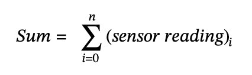

|
Mecha_15 (Zippy)
|

|
|
Mecha_15 (Zippy)
|
|
The Romi Project tasked teams of two students with developing a Micropython-based, autonomous, two-wheel-drive robot which competed in time-trials of a fixed track. The project exercised a holistic view of the mechatronics discipline, incorporating elements of mechanical design, electrical engineering, computer science, and control theory. Each team was given equal foundation for development: a Romi Chassis Kit equipped with a Motor Driver and Power Distribution Board from Pololu Robotics, and a Nucleo-L476RG development board from ST electronics connected to a custom extension board, the Shoe of Brian. Below is a rendered image of the standard hardware supplied to each team.

The game track, shown in a birds-eye view below, provided a diverse array of obstacles for Romi to navigate.

Deliberately, few rules were outlined to allow for creative solutions to the course’s challenges. Romi robots were required to begin within the 2D confines of the grey starting square and contact all checkpoints (denoted by labeled black dots) in numbered order before returning at least their geometric center to within the starting square to complete a time trial. The only additional rule required that the robot detect the wall adjacent to the starting square at some point during the run. Finally, two zones housed an object that, if displaced outside of the dotted regions, would yield a five second time deduction each for the trial.
The team’s Romi affectionately nicknamed “Zippy,” was developed in ten weeks and includes a 9-DOF IMU, 13-unit IR reflectance sensor array, tactile switch bump sensor, HC-05 Bluetooth module, and 20kg positional servo, in addition to the provided MCU and Motor Driver/PDB development boards.

This section serves to break down each hardware component individually and provides a brief description of the purpose and implementation of each.
A comprehensive wiring diagram is provided below for reference throughout the section.

The Nucleo-L476RG is a development board from STMicroelectronics featuring the STM32L476RG microcontroller, a single-core microcontroller with 1 MB of flash memory and 128 KB of RAM. The Nucleo features two, 38-pin male headers that provide access to PWM timer channels, ADC inputs, I2C communication and more. The team maximized the capacity of the board, ultimately being bottlenecked by the available ADC input pins. The board provided an excellent base for the team to develop embedded programming skills in Micropython, skills which are easily transferrable to other STM32-based microcontrollers, an increasingly common platform.
The Shoe-of-Brian is a custom auxiliary PCB attached directly to the headers on the back side of the Nucleo, and functions primarily to provide direct UART communication access to the MCU, bypassing the included “ST-Link” attached to the Nucleo. This allowed teams to flash Micropython code directly to the MCU through a mini-USB port on the Shoe.
A shortcoming of the Nucleo-L476RG that the team identified was the absence of on-board Bluetooth communication. The team knew that it would be invaluable to use serial communication for debugging and performance analysis. Doing so without Bluetooth required leaving Romi plugged in via mini-USB while running, greatly slowing down development. Accordingly, the team implemented an HC-05 wireless Bluetooth receiver connected to UART 5. The code below mirrors Micropython's tty (text-only terminals) to UART 5. This allows the MCU to communicate serial data over Bluetooth.
The Motor Driver and Power Distribution Board is designed specifically for Romi’s chassis by Pololu Robotics. It features dual motor drivers for independently controlling the two brushed DC motors included on Romi, along with convenient connections for the magnetic quadrature encoders attached to Romi’s motors. Additionally, it provides onboard power regulation to distribute power from six AA batteries at various voltages from logic levels, 3.3V and 5V, to full battery power.
The team utilized all power levels provided by the board. 3.3V for the MCU, 5V for the servo, and unregulated battery power for the motors. The specifications of the board were frequented to assure proper current could be provided through the regulator to all components.
Romi features two plastic gearmotors with a reduction gearing 120:1. The motors have extended backshafts to allow 12 CPR, magnetic quadrature encoders to attach directly. The motors and encoders are attached directly to the PBD as detailed on the Polulu website and are thus omitted from the wiring diagram.
The motors operate via pulse width modulation (PWM), which allowed the team to program different speeds based on the signal’s duty cycle as a percentage and change the direction based on a separate digital input. The motors were experimentally characterized to develop and equation for the steady-state velocity of the wheels at varying input voltage.
To achieve this, the team ran Romi at varying input voltages and recorded velocity readings in radians per second. The resulting graph displays important motor characteristics which were used to allow the team to instruct specific motor velocities during the time trials.
The graph above illustrates an approximately linear relationship between supplied voltage and output angular velocity of the wheel when running on the track surface. This graph provided the equation used to convert a desired velocity setpoint to a desired input voltage setpoint in the control sequence, as well as the steady-state gain, Kss, of the motor under frictional and inertial loads associated with driving on the game surface. Also, this graph provided important information about the threshold voltage required to overcome static friction.
Line detection was one of the primary ways to navigate the track quickly. For that, the team opted to use an array of 13 infrared reflectance sensors, which emit light from a small diode and output a voltage depending on how reflective the surface is that they are facing. After researching the availability, the team made a pivotal trade-off decision.
These sensors are available in both digital and analog output formats, an each presented challenges. Digital reflectance sensors require a GPIO pin to first be set as an output high, then as an input. The reflectance reading can then be calculated from the time it takes for the signal to decay. Analog sensors are much quicker by comparison, but the Nucleo is far shorter on analog inputs than digital. Additionally, the arrays are available in two different pitches, 8mm and 4mm. A tighter pitch lessens the tracking width, but increases the resolution of the measurement, allowing for detection of different line thicknesses.
Ultimately, the team decided to choose an analog sensor with a 4mm pitch, which utilized as many unallocated analog channels as possible with 13. The digital sensor required far too much time to be polled fast enough to navigate the course at high speeds, and the narrow pitch was an integral element in the teams strategy to track the certain landmarks based on line width.
To retrieve a line position reading from the sensor, the equation to calculate the x-position of a 2D shape’s centroid was adopted to an array of line sensor readings and their corresponding positions.


Via this equation, the team was able to achieve a reading for the line position relative to the sensor position. This was subtracted from the middle position, sensor 7, to receive a difference used to control Romi. This is further discussed in the Software section and can be explored in the associated code documentation.
For sections of the course where lines were not available to follow, the team needed a way to control both the forward velocity and orientation of Romi. The encoders provided sufficient information to ensure specific forward velocity, as well as track the distance Romi has traveled, but do not provide a reliable way to determine orientation. To fulfil this requirement, the team decided to use an IMU, the BNO055 chip from Bosch, attached to a breakout board from Adafruit which provided the necessary circuity and through-hole access to the I2C pins.
Implementation of the IMU required thorough and diligent examination of the associated documentation. This allowed the team to calibrate each of the three individual sensors—magnetometer, accelerometer, and gyroscope—and access the calibration coefficients for storage so that they could be manually written to the device when power-cycled to avoid repeated calibration. Additionally, the documentation provided reference to the device and register addresses necessary for writing to and reading data from the IMU over I2C communication protocol.
Heading data was originally taken from the magnetometer, however, the team encountered reliability difficulties and instead switched to receiving heading data primarily from the fused gyroscope data integrated into the IMU. This heading data was used similarly to the line position data, as controller feedback to ensure Romi could drive at a consistent heading.
Switch-style bump sensors were used to fulfil the wall-detection requirement of the track, as well as provide the unexpected benefit of an emergency shutoff switch. Originally, Romi featured a set of two, three-switch bump sensors from Pololu, offering protection for the entire front half of Romi. Eventually, the servo displaced the right bump sensor, as it was unnecessary for the requirements of the challenge.
The bump sensor implementation is perhaps the simplest of the whole design, and only requires each switch be wired to a GPIO port. Each pin is then assigned to the same interrupt callback in the program, as it is not required to determine which of the three switches was activated. The interrupt can contain any functionality needed depending on the section of the track Romi is in.
Since the software communicates with the motors via the duty cycle percentage of the supplied PWM signal—known in the program as “effort” percentage—the performance of the motor changes based on the voltage level supplied by the batteries. As they depleted, the team noticed large performance deficits, making it nearly impossible to reliably tune the control of the robot.
To resolve this problem, the voltage level needs to be read by the microcontroller so the maximum battery voltage can be accounted for in the program. Since the logic-level voltage of the microcontroller is 3.3V, the battery voltage had to be stepped down before it could be read by an analog input pin. To achieve this, the team constructed a voltage divider circuit shown by the following schematic.

To step down the voltage approximately 3-fold, resistor one must be double the value of resistor two. Resistor one was chosen to be 38K ohms, and resistor two was chosen to be 20K ohms. This steps the voltage down from a maximum of 8.4 volts (1.4V per battery) to approximately 2.9 volts maximum. This signal was read from an analog pin at the start of each run and back calculated to figure out the total battery voltage being supplied to the motors. This allowed the control sequence to determine the proper voltage to supply each motor, which could then be converted into an effort percentage based on the current battery voltage that could be sent via PWM signal to the motor. This concept is illustrated by the following equation.
The most unique feature of the team’s Romi was a servo-actuated arm, which allowed for the time-reducing objects to be easily and quickly displaced from their zones without deviating from the line during a run.
The “arm” utilized four, 14-inch zip ties attached to the servo horn via a custom 3D-printed bracket. Although it is not apparent from the birds-eye image of the game track, the gridded section had a pergola-like structure constructed from 80-20 that required Romi to drive underneath. Zip ties offered a stupid-simple solution: stiff enough to displace the light time-deduction objects, yet flexible enough to bend as Romi drove underneath the structure without disrupting Romi’s motion uncontrollably. The team’s Romi was nicknamed, “Zippy,” accordingly.
A 20kg positional servo was chosen for the job because it could be accurately positioned via the pulse width of a PWM signal. The specific 20kg servo used was intentionally purchased as its stall-current was below the maximum current allowed through the PDB’s 5V voltage regulator, contrary to other common standard servos. Although the job could’ve likely been accomplished with a micro servo, a standard, high-torque servo was purchased for reuse on other projects with potentially higher demands.
The servo required the most extensive mechanical design to integrate. To attach it to Romi’s chassis, a 3D-printed bracket was custom designed. A rendered image of the bracket is displayed below.
Additionally, the custom adapter pictured below was designed to attach the zip ties to the servo horn.
Below is a rendered image of the assembly attached to Romi.
The software was written in Python using the lightweight framework, MicroPython, which is optimized for microcontrollers and includes runtime and standard libraries useful for simple embedded development in Python.
The program uses a task scheduler structure to organize and run tasks at prescribed periods efficiently for single-core processing applications. The team utilized a custom library for classes pertinent to the operation of the scheduler. This library was developed by professors at Cal Poly SLO and can be accessed via the links below.
ME405 Support Library Documentation
The team opted to implement nested PID controllers to dictate Romi’s motion.
On the top layer, feedback from either the heading data from the IMU, or line position data from the IR reflectance sensor array is subtracted from a setpoint and processed by a PID controller. The resulting data is added or subtracted from a fixed feed-forward angular velocity specified in the program, yielding a desired angular velocity for each wheel that is subsequently fed to the bottom layer PID controller.
The bottom layer receives an angular velocity setpoint for a specific wheel and uses feedback from the associated encoder to determine the error between the desired and actual wheel velocity. This error is fed into another PID controller which outputs a voltage that is then combined with the desired velocity which is converted to a voltage prior via the motor characteristic equation formed experimentally by the team.
Finally, as discussed in the “Voltage Monitor” section, the desired voltage is converted to a duty cycle percentage (effort) based on the current battery voltage, and a PWM signal with the associated effort is applied to the motor.
A block diagram is shown below to illustrate the control.
Before writing the top-level program and implementing a scheduler to navigate the track, the team thoughtfully inspected the track to develop a strategy for attacking the course. The following image was used to plan out the top-level program.

The team first identified that the track would need to be attacked in sections. On a macro level, control would have to switch between IMU and line sensor feedback. To achieve this, Romi needed to have some element of positional awareness. Originally, the team anticipated using the encoders on each motor to track the total distance Romi travelled by averaging the values of the left and right wheels. While this likely would have provided enough precision over the relatively short track, the team opted for a slightly more complex approach to make the program more reliable and robust. Since the smaller of the two pitch options was chosen for the IR reflectance sensor array, the team noticed that there were detectable differences in total sum of reflectance read by the sensors. This was utilized to detect when the line was thicker than standard, such as at the checkpoints, or when the line was absent, such as in the gridded section. By clever interplay between the encoder data and line detection data, the program was made more robust.
A task dealing with control switches between IMU and line sensor control based on detection of line changes, but not without knowing which line changes should cause a certain change of state. This is where another task tracking encoder ticks comes in, notifying the control task generally where it is on the track to determine how to handle process line changes. In a symbiotic way, the line sensor task helps the tracker task by using certain line changes to notify the tracker task to reset the encoder count, mitigating error accumulation.
The list that follows is a more complete explanation of the exact points at which the controller and tracker tasks alert each other.
As stated in the section introduction, the main program was structured as a scheduler that runs tasks which are separated into classes. One layer deeper, each task class is structured as a finite state machine (FSM), with each state delegated an internal function within the class. Each task class contains one external generator function called “task(),” which is assigned to the scheduler and merely calls the proper internal function based on state of the FSM.
The diagram below serves as both a task diagram and class diagram, with some unconventional modifications for clarity.

In the top portion of each task-class box, the objects with bespoke driver classes that are instantiated and controlled by each task are included. Technically, no Servo driver class was created, however it has been detailed as such to show that the tracker class controls the Servo’s motion and to maintain clarity and consistency.
In the bottom portion of each task-class box, the functions outlining the FSM are included, as well as the task() function which runs in the scheduler. The controller class features two layers of FSMs, with the _LINE() and _IMU() functions each including their own sense-actuate controller loops, similar to the function of the Motor/Encoder FSM. A potential refactor that could structure the program more cleanly is discussed in the Results section. Individual state machine diagrams for each class have been omitted, as the Game Strategy section serves as a better explanation of how the tasks interact. For code-oriented descriptions of the state machines, please examine the class documentation.
The priorities and periods of each task have been omitted from the diagram and are instead included in the following table.
| Task Name | Task Function | Task Priority | Task Period [us] |
|---|---|---|---|
| Control | Controller.controller.task | 2 | 10 |
| Tracker | Tracker.Tracker.task | 1 | 20 |
| DriveR | MotorEncoderTask.MotorEncoder.task | 3 | 5 |
| DriveL | MotorEncoderTask.MotorEncoder.task | 3 | 5 |
Additionally, a table detailing the type and function of each share is included below.
| Share Name | Share Type | Tasks | Share Description |
|---|---|---|---|
| enabled | Unsigned Byte | Control, Tracker | Used to enable or disabled the higher level tasks. "Intercepted" to read bump sensors |
| sectionShare | Signed Byte | Control, Tracker | Used to communicate events (encoder count reached, line thickness found) between the Controller and Tracker |
| velocityR | float | Control, DriveR | Used to communicate right wheel velocity |
| posR | Unsigned Long | Tracker, DriveR | Used to communicate right encoder position |
| encoderResetR | Unsigned Byte | Tracker, DriveR | Used to zero the right encoder |
| velocityL | float | Control, DriveL | Used to communicate left wheel velocity |
| posL | Unsigned Long | Tracker, DriveL | Used to communicate left encoder position |
| encoderResetL | Unsigned Byte | Tracker, DriveL | Used to zero the left encoder |
The position shares would have been better fitted as signed longs, but as encoder tick counting was added late in development this is not caught before time trials.
The above link details specific documentation for each element of the final program.
Zippy displayed both excellent speed and reliability on the track, scoring full points in the competition and achieving the fastest course completion time, 6.80 seconds, out of all Romi competitors using primarily line-following strategy. Zippy was the only robot to use a servo-actuated arm to displace the time-reduction objects, a strategy that simplified the code structure and saved tremendous time.
Below is a video of the first official trial, along with a table detailing the results of all three officially sanctioned trials.
| Trial Number | Checkpoint 1 [s] | Checkpoint 2 [s] | Checkpoint 3 [s] | Checkpoint 4 [s] | Checkpoint 5 [s] | Raw Time [s] | Number of Cups | Final Time [s] |
|---|---|---|---|---|---|---|---|---|
| 1 | 3.06 | 6.03 | 9.20 | 10.83 | 13.07 | 16.90 | 2 | 6.90 |
| 2 | 3.07 | 6.03 | 9.17 | 10.93 | 13.13 | 16.80 | 2 | 6.80 |
| 3 | 3.10 | 6.17 | 9.27 | 10.90 | 13.17 | 16.80 | 2 | 6.80 |
The team gained tremendous experience with all four elements of Mechatronics, and implementing each in a collaborative way to ensure excellent performance. The team is particularly proud of the creativity and rapid prototyping used to develop a simple and effective mechanism to displace the time-deduction objects, as well as the strategic interplay between sensor data to ensure a highly consistent result. The voltage monitor circuit is also a point of success, and allowed the team to tune Zippy’s nested PID controllers and rely on consistent behavior regardless of battery level.
The primary successes of the project sprouted from the core difficulties the team faced throughout development. Chiefly, converting control theory into executable code in Python was difficult to conceptualize at times, and resulted in the team having to do a major refactoring of the code to ensure that the project could be cleanly documented; a challenge in its own right.
On the hardware side, although the Servo was very simple to implement, the original position on the rear caused the zip ties to catch the pergola above the gridded section when making the turn to exit the section. Additionally, the removal of the second time-deduction object was inconsistent. Although the team originally decided to tackle the section backwards, the compounding issues caused by the rear positioned prompted the team to reposition the servo to the front of Zippy. This was met with challenges as well, as Zippy was then front-heavy and required counterweight on the rear to stop the integrated front suspension from “bucking” on acceleration.
If the team were to have more time in Romi’s development, the weight distribution would be properly equalized, perhaps by using a micro servo rather than the far heavier, metal-geared servo. More time could be dedicated to making the wiring cleaner, although the team did not encounter difficulties due to this. The team also sees room for improvement in the code structure. By splitting up the Controller task into two separate tasks for the IMU and line sensor control, the structure would be more consistent. This also would allow a more straightforward implementation path for varying the speed and PID control based on the section of the track, rather than only having two different speeds associated with IMU and line sensing control respectively. These changes combined have the potential to greatly improve on the already fast and consistent performance of Zippy.